CHƯƠNG V Bài 24 TÂM LỘ VIÊN TỊCH I. ĐỊNH NGHĨA .Viên tịch (parinibbāna) là sự chấm dứt thân ngũ uẩn không còn sanh khởi danh uẩn cùng sắc uẩn mới. Parinibbāna là hợp từ của pari + nibbāna, Pari nghĩa là viên mãn, trọn vẹn. Nibbāna (Níp-Bàn) được phân tích thành Ni + vāna, Ni là không, vāna là ham muốn hay sự kết dệt (ám chỉ cho ái võng), I gặp V biến thành BB nên Ni + vāna thành Nibbāna (Níp-Bàn) nghĩa là không còn bị vướng vào võng ái, không còn liên hệ với ái dục. Níp-Bàn có 2 loại: - Phiền não Níp-Bàn (còn gọi là Hữu dư Níp-Bàn). Vị Thánh Tứ Quả đoạn trừ tất cả phiền não không còn dư sót nhưng còn thân ngũ uẩn, gọi là Hữu dư Níp-Bàn (Níp-Bàn còn dư sót). Vì thân năm uẩn là kết quả của Vô minh và ái dục quá khứ. - Ngũ uẩn Níp-Bàn (còn gọi là Vô dư Níp-Bàn). Vị Thánh diệt trừ luôn cả ngũ uẩn, gọi là Viên tịch hay Vô dư Níp-Bàn (Níp-Bàn không còn dư sót). II. PHÂN TÍCH. Vị Thánh Tứ Quả không bao giờ tịch diệt trong lộ ngũ môn, chỉ tịch diệt trong lộ ý môn. Viên tịch ở đây là sự Tử của vị thánh Tứ Quả. Nếu tâm Viên tịch sanh lên tiếp theo 1 loạt đổng lực Dục giới, thì tâm lộ Viên tịch này gọi là tâm lộ Viên tịch thông thường, nếu tâm Viên Tịch sanh lên kế tiếp một đổng lực An chỉ thì gọi là tâm lộ Viên tịch đặc biệt. A- TÂM LỘ VIÊN TỊCH THÔNG THƯỜNG. 1. Biểu đồ. Giống như phàm phu hay vị Thánh hữu học, lộ cận tử của vị thánh Tứ Quả cũng có 4 trường hợp: - Đổng lực, Na Cảnh, hữu phần và Viên Tịch. Mỗi trường hợp có một lộ, như vậy mô thức Viên Tịch thông thường có được 4 lộ. * Đổng lực, Na cảnh, hữu phần và Viên tịch. 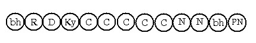 * Đổng lực, Na cảnh và Viên tịch. 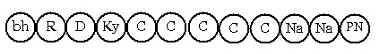 Ký hiệu: PN: Viên Tịch (Parinibbāna) Hai lộ này, mỗi lộ có được: - Sát-na: 8 sát-na tâm khách (sát-na Hướng ý môn, 5 sát-na đổng lực,
2 sát-na Na Cảnh) * Đổng lực, hữu phần và Viên Tịch. 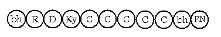 * Đổng lực và Viên Tịch: 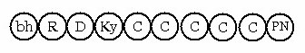 Hai lộ này, mỗi lộ có được: - Sát-na: 6 sát-na tâm khách (Hướng ý môn và 5 sát-na đổng lực) 2. Lý giải a) Cảnh trong lộ cận tử của vị A La Hán. Trong lộ cận tử của vị Thánh Tứ Quả, ba loại cảnh nghiệp, cảnh nghiệp tướng hay cảnh thú tướng đều vắng mặt, vì vị Tứ quả đã tận diệt nghiệp luân hồi. Vào thời điểm cận tử, các Ngài hướng đến sự Viên tịch bằng Thượng Pháp Tánh đã đắc, khi ấy cảnh án xứ Minh sát mà các Ngài đã tu tập hiện ra trong lộ cận tử do năng lực Thường cận y duyên (pakatupanissayapaccaya). b) Na cảnh trong lộ cận tử của vị A La Hán. Sờ dĩ có 11 tâm Na cảnh trong lộ này là vì: Đối với những án xứ Minh sát là bất mỹ tướng (asubhanimita), như trường hợp vị Thánh Tứ Quả quán thể trược hay quán tử thi chứng đắc Thánh quả. Bấy giờ những sắc tướng bất mỹ ấy làm cảnh trong thời cận tử, do vậy Na cảnh sẽ là tâm Quan sát xả thọ quả bất thiện. Trái lại các án xứ là thuần tịnh tốt đẹp, như các chi thiền... bấy giờ Na cảnh là những tâm quả thiện. Hoặc vị Thánh thuần quán về khổ thì có Na cảnh là tâm Quan sát quả bất thiện. Thuần quán về vô thường hay vô ngã thì Na cảnh là tâm quả thiện... B- LỘ VIÊN TỊCH ĐẶC BIỆT. 1- Định nghĩa. Tâm Viên tịch sanh kế tiếp một đổng lực An chỉ gọi là Viên tịch đặc biệt. Và lộ cận tử này gọi là tâm lộ Viên tịch đặc biệt. 2- Phân tích. Có cả thảy 4 tâm lộ Viên tịch đặc biệt, đó là: - Lộ Viên tịch liên thiền (jhānasamanantaravīthi) Biểu đồ. a) Tâm lộ Viên tịch liên Thiền. Trong mô thức này có hai trường hợp: - Tâm thiền, hữu phần, Viên tịch. Diễn tiến từng lộ như sau: LỘ 1: Người độn căn. 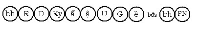 Người lợi căn 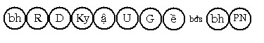 LỘ 2: Người độn căn: 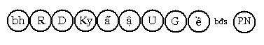 Người lợi căn: 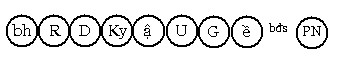 Tâm lộ này có được: - Sát-na: bất định số b) Tâm lộ Viên tịch liên phản khán. Tâm lộ này cũng có 2 trường hợp: - Đổng lực, hữu phần rồi Viên tịch . LỘ 1: Có xen hữu phần rồi Viên tịch 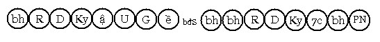 LỘ 2: Không xen hữu phần rồi Viên Tịch 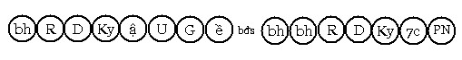 Hai lộ này, mỗi lộ có được: - Sát-na: 8 sát-na tâm khách c- Tâm lộ Viên tịch liên Thông . Tâm lộ này cũng có hai trường hợp: - Tâm Thông, hữu phần, Viên tịch. LỘ 1: Người độn căn, 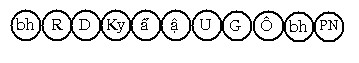 Người lợi căn 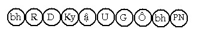 LỘ 2: Người độn căn: 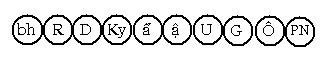 Người lợi căn: 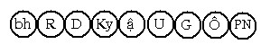 Hai lộ này, mỗi lộ này có được: Sát-na: 6 hoặc 5 sát-na tâm khách - Thứ tâm: 4 thứ tâm khách (Hướng ý môn, 2 đại Hạnh xả thọ có trí, 1
tâm Thông Hạnh). d- Tâm lộ Viên tịch Chí mạng. Lộ này có 2 trường hợp xen hữu phần rồi Viên tịch và không xen hữu phần rồi Viên tịch. - Có hữu phần rồi viên tịch. 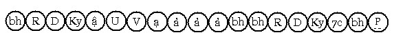 - Đổng lực rồi viên tịch. 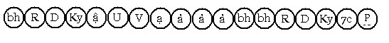 Mỗi lộ có được: - Sát-na: 6 và 8 (lộ Đắc Đạo chí mạng có 6 sát-na, lộ phản khán có 8
sát-na,) 3- Biện giải. a- Vì sao có lộ Viên tịch đặc biệt? Vị Thánh A La Hán đã tận diệt mọi phiền não, dù Viên tịch với lộ tâm nào cũng vậy thôi, nhưng sở dĩ các Ngài tịch diệt với lộ đặc biệt là muốn chúng sanh thấu rõ ân đức các Thượng Pháp Tánh, nhằm khích lệ và sách tấn chúng sanh tu tiến theo đạo lộ giải thoát, một đạo lộ có nhiều ân đức siêu việt, ngay cả khi sắp lâm chung những ân đức Thượng Pháp Tánh vẫn có thể hiển lộ được. Riêng tâm lộ Viên tịch chí mạng, nói lên ân đức Thượng Pháp Tánh là akāliko (phi thời gian), ân đức Pháp này không chờ ngày giờ, khi chứng Tứ Đạo thì sanh khởi quả Vô Lậu ngay. b- Số lượng tâm lộ Viên tịch đặc biệt. - Có 36 tâm lộ Viên tịch liên Thiền, như sau: 2 trường hợp Viên tịch (có xen hữu phần và không xen hữu phần) nhân với 2 hạng người: độn căn và lợi căn thành 4, nhân với 9 tầng thiền Hạnh thành ra 36 lộ. - Có 48 lộ Viên tịch phản khán chi thiền như sau: - Có 10 lộ Viên tịch sanh kế tục lộ phản khán sơ thiền, là lấy 5 chi
thiền dùng để phản khán, nhân với 2 hạng người: độn căn và lợi căn. Tổng cộng có 48 tâm lộ Viên tịch phản khán chi thiền. - Có 4 tâm lộ Viên tịch liên Thông, là lấy 2 trường hợp Viên tịch: Thông Hạnh, hữu phần rồi Viên tịch và Thông Hạnh rồi Viên tịch. Nhân với 2 hạng người: độn căn và lợi căn, thành ra 4 lộ. - Có 22 tâm lộ Viên tịch chí mạng, phân thành 2 trường hợp như sau: a- Quán xét Đạo, Quả, Níp-Bàn rồi Viên tịch chỉ có 2 lộ theo 2 mô thức: đổng lực rồi Viên tịch, đổng lực, hữu phần, rồi Viên tịch. Một trong hai tâm lộ này chắc chắn sẽ khởi lên cho vị Đắc Đạo chí mạng. b- Quán xét phiền não đã sát trừ rồi Viên tịch có 20 lộ. Cách tính là lấy 10 phiền não đã sát trừ nhân với 2 mô thức Viên tịch thành 20 lộ. Một trong 20 tâm lộ này sẽ khởi lên cho vị Thánh Vô Lậu chí mạng, nhưng không chắc chắn. Tổng kết có 110 tâm lộ Viên tịch đặc biệt. c- Giải thích từng tâm lộ Viên tịch đặc biệt. * Tâm lộ Viên tịch liên Thiền. Tâm lộ Viên tịch nối liền trực tiếp với lộ nhập thiền, không có tâm khách quan nào xen giữa, gọi là tâm lộ Viên tịch liên Thiền. Vị A La Hán muốn Viên tịch bằng lộ tâm này, trước tiên an trú vào định nhập làm tịnh chỉ các khổ thọ nơi thân, khổ thọ này do quả dư sót của nghiệp quá khứ, như Đức Thế Tôn sắp Viên tịch bị bịnh kiết lỵ chẳng hạn. Rồi lần lượt xuất nhập các tầng thiền mà vị ấy chứng đắc được, đến lộ cận tử cũng an trú vào tầng thiền nào đó theo ý muốn khi xuất ra khỏi thiền trú thì tâm Viên tịch xuất hiện (có xen hữu phần hoặc không xen hữu phần). Sự tịnh chỉ khổ thọ chỉ có nơi cõi người, các chư Thiên, Phạm thiên không có điều này vì thân các vị ấy là sắc tế hóa sanh. Riêng ở cõi Phi tưởng phi phi tưởng, tuy vị Thánh Tứ Quả chỉ chứng đạt thiền Phi tưởng phi phi tưởngxứ, nhưng xuất nhập thiền này nhiều lần cũng được kể vào tâm lộ Viên tịch liên Thiền. Diễn tiến tâm lộ này như sau: Rúng động, Dứt dòng, Hướng ý môn, Chuẩn bị, Cận hành, Thuận khứ, Chuyển tánh (4 sát-na này do 1 trong 4 đại Hạnh có trí đảm nhận) tiếp theo là tâm thiền (1 trong 9 tâm thiền Hạnh) sanh khởi nhiều ít là do ý của vị ấy, sau cùng là tâmViên tịch sanh khởi (có xen hữu phần hoặc không). Vị lợi căn không có sát-na Chuẩn bị trong lộ nhập định. * Tâm lộ Viên tịch liên phản khán chi thiền. Tâm lộ này nối liền với tâm lộ phản khán chi thiền, không có tâm khách quan nào xen vào giữa. Muốn Viên tịch bằng tâm lộ này, vị Thánh Tứ Quả phải là bậc có trí già mạnh (bậc lợi căn), vì khi ấy thời gian rất gấp rút, lại phải quán xét chi thiền. Trước tiên vị Thánh Tứ Quả an trú vào Định nhập làm tịnh chỉ các khổ thọ có nơi thân, xuất thiền rồi phản khán chi thiền, tâm lộ phản khán này có hàng trăm hàng ngàn lộ theo thích ứng, rồi tâm Viên tịch sanh khởi (không xen hoặc có xen hữu phần cơ bản), dứt sát-na Viên tịch vị A La Hán Vô dư Níp-Bàn. Diễn tiến như sau: Rúng động, Dứt dòng, Hướng ý môn, Cận hành, Thuận thứ, Chuyển tánh, thiền Hạnh, khi xuất khỏi Định nhập lộ phản khán sanh khởi nhiều hoặc ít tùy theo ý, kế tiếp đổng lực phản khán là tâm Viên tịch. * Tâm lộ Viên tịch liên Thông. Là tâm Viên tịch nối tiếp với tâm Thông, không xen lẫn một tâm khách nào khác. Abhiññā trong hợp từ abhiññāsamanantara chỉ cho thuần túc thông (iddhividha). Muốn hóa hiện thông lực trước khi Viên tịch, vị A La Hán phải nhập thiền Cơ, xuất khỏi thiền Cơ chú nguyện phép lạ nào mà mình muốn thị hiện rồi nhập lại thiền Cơ lần nữa, khi xuất khỏi thiền Cơ lần thứ nhì, lộ tâm Thông Hạnh xuất hiện. Diễn tiến như sau: Rúng động, Dứt dòng, Hướng ý môn, Chuẩn bị, Cận hành, Thuận thứ, Chuyển tánh, Thông Hạnh (một sát-na duy nhất). Khi tâm Thông Hạnh thị hiện thông lực xong diệt đi, thì tâm Viên tịch hiện khỏi hoặc có xen một hữu phần hoặc kế tiếp theo tâm Thông Hạnh. Bậc Thánh Tứ quả lợi căn thì không có sát-na Chuẩn bị. d- Tâm lộ Viên tịch chí mạng. Để hiểu rõ thuật ngữ jīvitasamasīsī, ta cần biết rằng ngũ uẩn có 2 cái đầu (sīsī) là: - Vaṭṭasīsī (đầu luân hồi), chỉ cho tâm sở Mạng quyền và sắc Mạng quyền, vì chúng là cái đầu của khổ luân hồi. - Kilesasīsī (đầu của phiền não) chỉ cho tâm sở Si, vì nó là đầu của tất cả phiền não. Khi tâm sở Mạng quyền cùng sắc Mạng quyền chưa trọn vẹn trừ diệt thì chúng sanh ấy chưa mệnh chung hẳn, còn chuyển biến từ thân ngũ uẩn này sang thân ngũ uẩn khác, chỉ khi nào 2 loại mạng quyền này dứt trừ trọn vẹn, khi ấy chúng sanh thật sự CHẾT . Do đó, danh Mạng quyền và sắc Mạng quyền được gọi là vaṭṭasīsī (đầu luân hồi). Khi tâm sở Si chưa được sát trừ trọn vẹn thì các phiền não vẫn còn hiện hữu, khi nào tâm sở Si được đoạn trừ hẳn, khi ấy các loại phiền não hoàn toàn vỡ vụn. Người đắc Đạo chí mạng (jīvitasamasīsī) là người biết tranh thủ giây phút ngắn ngủi còn lại của đời sống, triển khai tâm yểm ly thế gian, tu tiến cấp tốc Tứ Niệm xứ (hay quán Minh) chứng đạt đến Tứ Quả. Nghĩa là ngay giây phút cận kề với sự chết đã chứng đạt Quả Lậu tận (khīṇāsava), khiến 2 cái đầu vaṭṭasīsī cùng kilesasīsī đồng bể tan cùng lúc với tâm lộ chứng Tứ Đạo. Các Ngài đã giải tự thuật ngữ Jīvitasamasīsī như sau: - Jīvitena samaṃ avijjāsīsaṃS assāti jīvitasamasīsī "Người đắc Đạo chí mạng là người chấm dứt đầu Vô minh cùng với 2 thứ Mạng quyền". Cũng nên hiểu rằng: Tuy nói phiền não cùng với 2 thứ mạng quyền đồng chấm dứt, nhưng không phải dựa vào đó mà hiểu rằng: Chúng cùng diệt vào 1 sát-na tâm, vì khi chứng đạt Tứ Đạo, theo quy luật phải có lộ phản khán Đạo, mà tâm lộ này sanh khởi rất nhiều lần, sau đó mới đến lộ cận tử và tâm Viên tịnh mới sanh lên. Khi tâm Viên tịch diệt thì 2 loại Mạng quyền (đầu luân hồi) đồng diệt. Phân tích rõ như thế, thì rõ ràng "2 cái đầu" không đồng diệt như danh từ jīvitasamasīsī, nhưng nói theo phương diện thời gian thông thường (velā), không y cứ vào thời gian chơn đế (khaṇakāla) thì không có gì sai cả. Như trường hợp Đại Thần Santati vừa chứng đạt Tứ Quả xong quán xét tuổi thọ còn sót chút ít, nên đãnh lễ Đức Thế Tôn xin Viên tịch ngay sau đó và cũng không phải chỉ có bậc A Na Hàm mới có lộ Đắc Đạo chí mạng, ngay cả phàm Tam nhân cũng có được lộ Viên tịch chí mạng này. Trường hợp của phàm Tam nhân thì trong giây phút ngắn ngủi còn lại của đời sống, vị ấy lần lượt chứng đạt 4 lộ Đắc Đạo liên tục cùng với mỗi mỗi tâm lộ phản khán nối tiếp theo lộ Đạo tương ứng thích hợp, sau cùng tâm Viên tịch sanh khởi, bâc Dự Lưu thì lần lượt chứng 3 lộ Đạo cao cùng 3 tâm lộ phản khán tương ứng, bậc Nhất Lai thì chứng đạt 2 lộ Đạo cao cùng 2 lộ tâm phản khán tương ứng. Ở đây, nêu rõ sự diễn tiến tâm lộ đắc Đạo chí mạng sau cùng (tâm lộ chứng đạt A La Hán) sau đó Viên tịch, như sau: Rúng động, Dứt dòng, Hướng ý môn, Cận hành, Thuận thứ, Tiến bậc, sát-na Tứ Đạo, rồi 3 sát-na Tứ quả. Khi sát-na thứ 3 tâm Tứ Quả diệt đi, lộ phản khán sanh khởi để quán xét lại Đạo, Quả, Níp-Bàn và Phiền não đã sát tuyệt, lộ phản khán này tái diễn hàng trăm hàng ngàn lần thích ứng. Lúc tâm đổng lực phản khán cuối cùng diệt đi tâm Viên tịch sanh lên (hoặc có xen hữu phần giữa đổng lực và tâm Viên tịch). Tâm lộ Viên tịch chí mạng chỉ có ở 7 cõi vui Dục giới, không thể có ở cõi Phạm thiên Sắc giới, vì cõi này không có cái chết đau đớn, thậm chí không có sự chán nãn trong tư tưởng (dukkhavedanācetasika). Ở 7 cõi vui Dục giới, lộ đắc Đạo chí mạng thường khởi sanh ở cõi người hơn vì có những cái chết đau đớn, còn 6 cõi trời Dục tuy không có cái chết đau đớn, nhưng khi vị chư Thiên nhận được 5 điềm báo tử, tâm kinh cảm, vị ấy triển khai quán Minh và chứng đắc lộ Viên tịch chí mạng. Trong thời điểm cận tử nhất sanh ấy, muốn chứng đạt lộ đắc Đạo chí mạng, chúng sanh này phải có trí tuệ già mạnh, trí tuệ nhanh lẹ mới có thể thành đạt kết quả hi hữu thù diệu này. Do đó, trong tâm lộ chỉ có sát-na Cận hành (người lợi căn) Thuận thứ và Tiến bậc, không có sát-na Chuẩn bị của người độn căn. Mặt khác, tuy lộ đắc Đạo chí mạng chủ yếu nói về 2 cái đầu (sīsī) cùng bể, nhưng các pháp khác cũng "vỡ vụn" đồng thời với phiền não. Các Ngài đã liệt kê vào lộ đắc Đạo chí mạng như sau: - Quyền (indriya) cũng diệt với phiền não không hề sanh khởi lại, như trường hợp Trưởng lão Cakkhupāla nhãn quyền (cakkhindriya) đồng diệt với phiền não Si và Trưởng lão mù kể từ khi ấy cho đến khi Vô dư Níp-Bàn (nghĩa là nhãn quyền kể từ khi đó không còn sanh lên nữa). - Thọ (vedàna) đồng diệt với kilesasīsī, như trường hợp trưởng lão Pūtigatta Tissa (Trưởng lão Tissa có thân hôi thối), khổ thọ đồng diệt với phiền não và Ngài Vô dư Níp-Bàn ngay sau đó. Hay như vị Tỳ khưu bị cọp vổ và ngay trong miệng cọp Ngài quán xét khổ thọ chứng đạt Quả Vô Lậu rồi Viên tịch. - Oai nghi đồng diệt với phiền não và không hề sanh khởi lại, như trường hợp Trưởng lão Ānanda, chứng đắc Tứ Đạo trong oai nghi không phải nằm cũng không phải ngồi. Từ đó về sau Ngài Ānanda ngăn oai nghi nằm, trọn 40 năm sau cùng của tuổi thọ, oai nghi "không phải nằm cũng không phải ngồi" không hề sanh khởi cho Trưởng lão Ānanda. ----*---- TỔNG KẾT
-ooOoo- Ðầu trang | Mục lục | 01 | 02 | 03 | 04 | 05 | 06 | 07 | 08 | 09 | 10 | 11 | 12 | 13 | 14 | 15 | 16 | 17 | 18 | 19 | 20 | 21 | 22 | 23 | 24 | 25 |